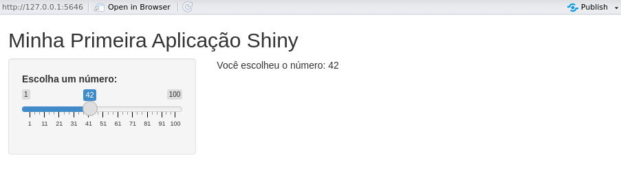

Introdução ao shiny
Introdução aos principais conceitos de criação de dashboards no R através do pacote shiny
By Maurício Vancine com edições de textos do ChatGPT in Blog
January 2, 2025
Contextualização
Eu tive conhecimento do shiny lá por volta de 2017. Em 2018, trabalhei um pouco com a ferramenta para desenvolver uma aplicação que coletava pontos de classes de uso e cobertura da terra na Amazônia. Desde então, nunca mais trabalhei com a ferramente e ela teve uma séria de modificações e aprimoramentos que pretendo estudar.
Este post é o começo da retomada desses estudos.
Desenvolvimento
Pacote shiny
Shiny é um pacote do R que permite criar aplicações web interativas a partir do código R, sem a necessidade de conhecimentos avançados em desenvolvimento web.
Ele é amplamente utilizado por cientistas de dados, pesquisadores e analistas para criar dashboards, que são ferramentas de visualização e interfaces interativas para manipulação de dados e modelos estatísticos.
Com o shiny é possível integrar gráficos, tabelas e entradas de usuário em uma aplicação que pode ser executada localmente ou publicada na web, tornando os resultados das análises mais acessíveis para públicos não especializados.
Estrutura geral de uma aplicação shiny
Uma aplicação Shiny é composta por três partes principais:
1. Interface do usuário (User Interface - UI)
A UI define o layout e os elementos visuais da aplicação. Ela é onde você organiza componentes como painéis, menus, sliders, gráficos e tabelas. Para criar uma interface, você utiliza funções como fluidPage(), sidebarLayout() e outros componentes interativos.
Exemplo de componentes comuns:
fluidPage(): Layout fluido que ajusta os elementos à largura da janela.sidebarLayout(): Divide a aplicação em uma barra lateral e um painel principal.sliderInput(): Adiciona um controle deslizante.textOutput(): Exibe texto gerado dinamicamente.
ui <- fluidPage(
titlePanel("Título da Aplicação"),
sidebarLayout(
sidebarPanel(
sliderInput("slider", "Escolha um valor:", min = 1, max = 100, value = 50)
),
mainPanel(
textOutput("output_text")
)
)
)
2. Servidor (Server)
O Servidor processa entradas, realiza cálculos ou análises e fornece as saídas que serão exibidas na interface. Ele utiliza funções reativas como renderText(), renderPlot(), renderTable(), entre outras.
No exemplo abaixo, o valor escolhido no slider é exibido como texto:
server <- function(input, output) {
output$output_text <- renderText({
paste("Você selecionou o valor:", input$slider)
})
}
3. Função Principal
A função shinyApp() conecta a interface e o servidor, e executa a aplicação:
shinyApp(ui = ui, server = server)
Aplicação shiny sendo executada localmente:

Layouts e estilos no shiny
O Shiny oferece diferentes layouts para organizar os elementos da interface:
fluidPage(): layout fluido básiconavbarPage(): layout com abas de navegaçãosidebarLayout(): layout com barra lateralsplitLayout(): divide a página em várias colunas
Exemplo de layout com abas:
ui <- navbarPage(
"Minha Aplicação",
tabPanel("Aba 1", textOutput("text1")),
tabPanel("Aba 2", textOutput("text2"))
)
Você pode usar CSS para personalizar sua aplicação Shiny. O CSS pode ser incluído diretamente no código ou em arquivos externos.
ui <- fluidPage(
tags$style(HTML("
body {background-color: #f4f4f9;}
h1 {color: #4CAF50;}
")),
titlePanel("Aplicação com Estilo")
)
Principais funcionalidades
As funcionalidades do Shiny oferecem uma ampla gama de possibilidades, permitindo desde a manipulação de dados até a criação de interfaces sofisticadas e visualizações dinâmicas. Abaixo, os principais recursos foram organizados e detalhados para destacar suas aplicações práticas:
- Interatividade: permite criar elementos interativos como sliders, caixas de seleção, botões, menus suspensos e upload de arquivos
- Visualizações interativas: integração com pacotes gráficos como ggplot2, plotly e leaflet para criar gráficos, mapas e tabelas interativos
- Reatividade: permite que os outputs mudem automaticamente sempre que uma entrada for alterada, sem a necessidade de recarregar a página
- Gerenciamento de dados: leitura, manipulação e visualização de grandes volumes de dados diretamente na interface, além de conexão com APIs para obter dados externos em tempo real
- Upload e download de arquivos: permite que os usuários carreguem arquivos para a aplicação e baixem resultados
- Integração com banco de dados: conexão com bancos SQL (MySQL, PostgreSQL) e NoSQL (MongoDB) para leitura e gravação de dados
- Sessões e logs: gerenciamento de múltiplos usuários com sessões personalizadas e registre interações para auditoria e monitoramento
- Criação de dashboards: construção de interfaces amigáveis e responsivas para análise de dados. Uso de pacotes como shinydashboard para design de painéis sofisticados
- Escalabilidade e hospedagem: implantação local, em servidores Shiny Server, ou na nuvem (ex.: ShinyApps.io)
Interatividade
A interatividade é um dos principais diferenciais do Shiny, permitindo a criação de interfaces altamente dinâmicas e adaptáveis. Essa funcionalidade possibilita que os usuários interajam diretamente com a aplicação para controlar inputs, visualizar resultados em tempo real e realizar ajustes personalizados. Abaixo, detalhamos os elementos principais:
1. Elementos de entrada (inputs)
Os elementos de entrada são componentes que permitem ao usuário fornecer dados ou ajustar parâmetros da aplicação. Exemplos incluem:
-
Sliders (
sliderInput()):- Controle de valores numéricos contínuos ou intervalos
- Usado para definir filtros, limites de dados ou parâmetros em análises
- Exemplo: Escolher uma faixa de tempo para análise
-
Caixas de Seleção (
checkboxInput(),checkboxGroupInput()):- Permitem escolhas binárias (sim/não) ou múltiplas
- Exemplo: Ativar ou desativar camadas em um mapa interativo
-
Botões (
actionButton()):- Executam ações específicas apenas quando clicados
- Exemplo: Iniciar uma análise estatística ou atualizar um gráfico
-
Menus Suspensos (
selectInput(),pickerInput()):- Apresentam opções de forma compacta, permitindo que o usuário selecione uma ou mais
- Exemplo: Escolher uma variável em um conjunto de dados para análise
-
Campos de Texto e Áreas de Texto (
textInput(),textareaInput()):- Permitem a entrada de texto pelo usuário
- Exemplo: Inserir nomes, códigos ou descrições para relatórios
-
Upload de Arquivos (
fileInput()):- Usuários podem carregar arquivos diretamente para a aplicação
- Exemplo: Importar dados de planilhas ou imagens para visualização ou análise
2. Elementos de saída (outputs)
Os elementos de saída exibem os resultados das interações realizadas pelo usuário. Exemplos incluem:
-
Gráficos e Mapas Interativos:
- Atualizam dinamicamente com base nos inputs fornecidos
- Integração com pacotes como
ggplot2,plotlyeleaflet
-
Tabelas (
renderTable(),DT::renderDataTable()):- Apresentam dados em formatos tabulares, com suporte para filtros e ordenações
-
Textos Dinâmicos (
renderText()):- Exibem resultados de cálculos ou mensagens personalizadas com base nos inputs
3. Reatividade e feedback imediato
A interatividade no Shiny é alimentada pela reatividade, que permite que outputs sejam atualizados automaticamente sempre que um input associado for alterado.
-
Reatividade Automática:
- Funções reativas como
reactive(),observe(), eobserveEvent()monitoram mudanças nos inputs e disparam atualizações dos outputs - Exemplo: Um gráfico que muda dinamicamente ao ajustar um slider de faixa etária
- Funções reativas como
-
Feedback Visível:
- Indicadores de carregamento (
withProgress()) são usados para mostrar que uma operação está em andamento - Exemplo: Barra de progresso ao carregar um grande conjunto de dados
- Indicadores de carregamento (
4. Integração de inputs e outputs
Os inputs e outputs podem ser combinados para criar fluxos de trabalho interativos complexos. Exemplo:
- O usuário carrega um arquivo CSV
- Seleciona colunas específicas para visualização usando menus suspensos
- Ajusta parâmetros com sliders e filtros
- Visualiza os resultados em gráficos e tabelas dinâmicos
5. Exemplos práticos
- Painéis de controle: dashboards interativos que permitem explorar dados ajustando sliders, menus e caixas de seleção
- Filtros dinâmicos: refinamento de gráficos e tabelas em tempo real com base nos parâmetros selecionados
- Aplicações educacionais: simulações de modelos matemáticos ou ecológicos em que o usuário ajusta variáveis para observar resultados
Reatividade
A reatividade é um dos conceitos mais importantes do Shiny. Ela permite que elementos da aplicação sejam atualizados automaticamente quando os valores de entrada mudam.
Isso pode ser feito com dados de entrada e saída:
- Inputs: elementos de entrada fornecidos pelo usuário, como sliders, caixas de seleção, botões, etc.
- Outputs: elementos de saída que exibem resultados, como texto, tabelas, gráficos ou mapas
As expressões reativas monitoram as entradas e são reexecutadas automaticamente quando uma entrada associada é alterada. Funções reativas incluem:
renderText(): gera textorenderPlot(): gera gráficosrenderTable(): gera tabelas
Exemplo de reatividade:
server <- function(input, output) {
output$squared <- renderText({
paste("O quadrado do valor é:", input$slider^2)
})
}
Visualizações interativas
O Shiny é amplamente utilizado para criar visualizações interativas, permitindo aos usuários explorar e analisar dados de forma dinâmica. A seguir, apresento detalhes sobre como criar e personalizar visualizações interativas no Shiny, abordando pacotes, exemplos práticos e boas práticas.
No Shiny, as visualizações podem incluir gráficos, mapas, tabelas e outras representações interativas. Aqui estão alguns exemplos:
- Gráficos 2D/3D: criados com pacotes como ggplot2, plotly, e echarts4r
- Mapas interativos: desenvolvidos com leaflet ou mapdeck
- Tabelas interativas: usando DT (DataTables) para permitir ordenação, pesquisa e exportação
- Gráficos dinâmicos: gráficos de dispersão interativos ou heatmaps
Gráficos
- ggplot2: criação de gráficos estáticos que podem ser integrados ao Shiny
- plotly: transforma gráficos
ggplot2em interativos ou cria gráficos do zero
output$plot <- renderPlotly({
plot_ly(data = mtcars, x = ~mpg, y = ~hp, type = 'scatter', mode = 'markers')
})
- highcharter: gráficos interativos baseados na biblioteca JavaScript Highcharts
- echarts4r: biblioteca moderna para gráficos altamente personalizáveis
Mapas
- leaflet: Criação de mapas interativos com marcadores, pop-ups e camadas
output$map <- renderLeaflet({
leaflet() %>%
addTiles() %>%
addMarkers(lng = -47.92, lat = -15.78, popup = "Brasília")
})
- tmap: alternativa para mapas interativos temáticos
- sf + shiny: manipulação de dados espaciais e visualização
Tabelas
- DT: permite criar tabelas interativas com filtros, ordenação e exportação de dados
output$table <- renderDT({
datatable(mtcars, options = list(pageLength = 5))
})
Dashboards
- shinydashboard: usado para criar dashboards com painéis interativos
- flexdashboard: integração de gráficos e tabelas em painéis
Publicação de aplicações
Publicações podem ser feitas localmente ou na web.
Publicações locais geralmente são sadas para testes através da função runApp() executa a aplicação localmente.
shiny::runApp()
Publicações na web são realizadas através do ShinyApps.io ou em servidores próprios usando o RStudio Connect.
Essa plataforma da RStudio permite hospedar aplicações Shiny. Basta criar uma conta, instalar o pacote rsconnect e seguir os passos para publicar sua aplicação.
library(rsconnect)
rsconnect::deployApp("caminho/para/sua/aplicacao")
Você pode usar o Shiny Server (versão gratuita ou Pro) para hospedar suas aplicações em um servidor Linux.
Conclusão
O shiny é uma ferramenta extremamente flexível e poderosa, sendo amplamente utilizado em visualização de dados, criação de dashboards e aplicações analíticas.
Para saber mais
Sites
Livros
- Beeley, C. (2016). Web Application Development With R Using Shiny: Integrate the Power of R With the Simplicity of Shiny to Deliver Cutting-edge Analytics over the Web (2nd edition). Packt Pub Ltd.
- Beeley, C., & Sukhdeve, S. R. (2018). Web application development with R using Shiny: Build stunning graphics and interactive data visualizations to deliver cutting-edge analytics (Third edition). Packt Publishing.
- Fay, C., Rochette, S., Guyader, V., & Girard, C. (2021). Engineering Production-Grade Shiny Apps (1st edition). Chapman and Hall/CRC. https://engineering-shiny.org/
- Granjon, D. (2022). Outstanding user interfaces with Shiny (First edition). CRC Press. https://doi.org/10.1201/9781003124924
- Majumdar, P. (2021). Learn Emotion Analysis with R. BPB Publications.
- Moon, K.-W. (2016). Learn ggplot2 Using Shiny App (1st ed. 2016). Springer International Publishing: Imprint: Springer. https://doi.org/10.1007/978-3-319-53019-2
- Moraga, P. (2020). Geospatial health data: Modeling and visualization with R-INLA and Shiny. CRC Press.
- Sievert, C. (2020). Interactive web-based data visualization with R, plotly, and shiny. CRC Press, Taylor and Francis Group.
- Wickham, H. (2021). Mastering Shiny: Build Interactive Apps, Reports, and Dashboards Powered by R (1ª edição). O’Reilly Media. https://mastering-shiny.org/
- Wiley, M. (with Wiley, J. F.). (2020). Advanced R 4 Data Programming and the Cloud: Using PostgreSQL, AWS, and Shiny (2nd ed). Apress L. P.
Vídeos
- Dashboard com R Shiny - Gabriel Lima Gomes
- 10 dicas para programar melhor em Shiny - Curso-R
- R Shiny Web Application - Data Professor
Cursos pagos
Fonte da imagem: Posit.